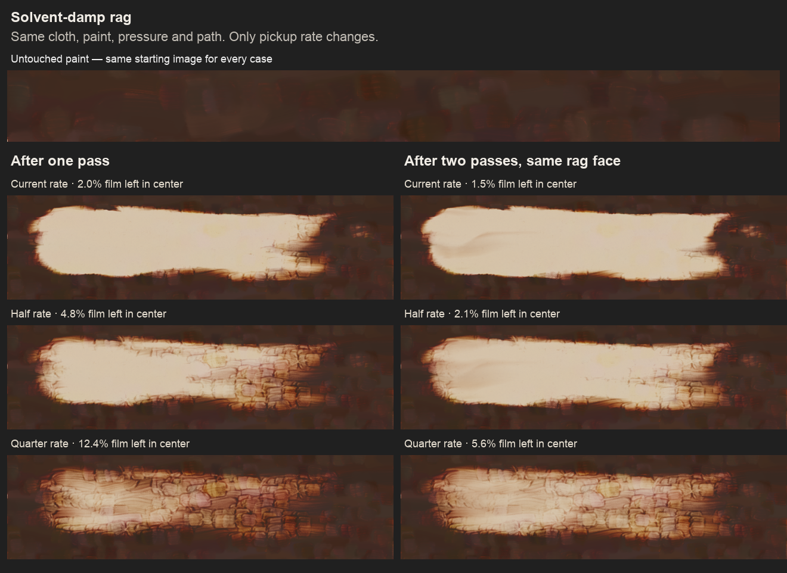
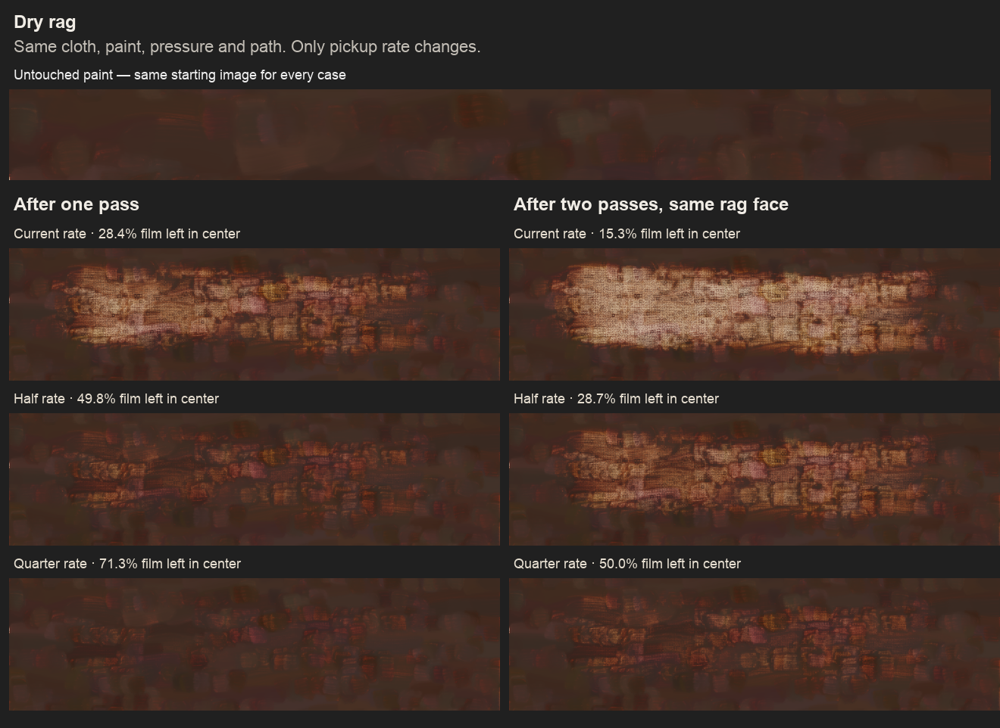

Three pickup rates, with the same deforming cloth. Lower rates leave more paint for a second damp pass to remove, while also making the dry wipe weaker. These are sensitivity comparisons, not calibrated material settings.

| Pickup rate | Film left: damp, 1 pass | Film left: damp, 2 passes | Darkness left: damp, 1 pass | Film left: dry, 1 pass |
|---|---|---|---|---|
| Current rate | 2.0% | 1.5% | 24.0% | 28.4% |
| Half rate | 4.8% | 2.1% | 39.0% | 49.8% |
| Quarter rate | 12.4% | 5.6% | 71.4% | 71.3% |
Each percentage is relative to its own untouched starting value in the same central band. The starting film averages 69.3 µm there. The current rate leaves 1.38 µm after one damp pass and 1.05 µm after two. Film thickness and visible darkness are different measurements.

Palesca’s wipe-out demonstration, steps 9–12, starts with paint spread as thinly as possible, lifts lights with a rag, then uses mineral spirits for stronger clearing. She says a further wipe with a dry part of the rag may be needed. This supports strong clearing and additional removal on another wipe.
It does not establish the right rate here: our repeat uses the same solvent-damp face, our starting film is simulated and the demonstration provides no measured thickness or removal per pass. None of these three rates is established as physically accurate.
Jackson’s guide to grounds also describes smooth, relatively nonabsorbent grounds as supporting wipe-back techniques. A matched physical comparison would need the ground as well as the paint and wiping procedure specified.
The central band is x = 350–650, y = 310–370 canvas units, fixed across all runs and away from the stroke’s starting, ending and side edges. Film is the mean wet thickness sampled directly from the canvas. Darkness is the mean linear-light luminance deficit relative to the primed ground, divided by that of the untouched paint. It is an image measurement, not a pigment-mass estimate.
The CSVs also contain a larger envelope (x = 250–750, y = 280–400), including stroke edges and some untouched paint. Those values are not used in this page’s table.
Only LIFT changes: 4.0, 2.0 or 1.0. The damp multiplier, cloth, seeds, paint, pressure, path, sampling and paint-transfer rules remain fixed. Pressure 0.8; solvent dip 0.5; 2400-pixel canvas width. No refolding between passes. Each dry/damp sequence starts from the same paint and a fresh rag.
The current-rate rerender is pixel-identical to all five earlier material-review originals. All three settings also share pixel-identical starting paint and ground. Checks · Settings · Render and measurement source · Base prototype patch.
This uses the development iteration profile. No release-validation claim is made. Shipping source was restored after the comparison; none of these rate changes was selected or shipped.